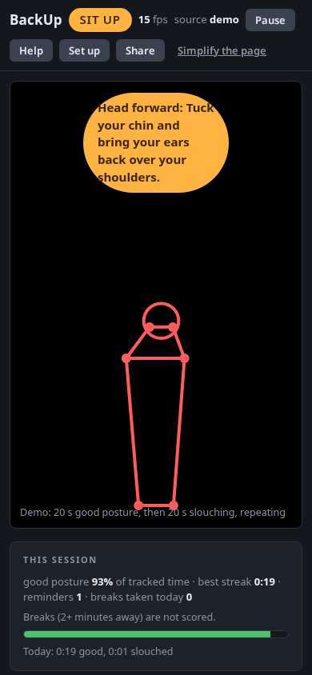

What it does
Sit at your desk; the camera watches, measures four head and shoulder angles, and only nudges you when slouching lasts: chime first, spoken prompt after, silence the moment you sit up.
Says what to fix
Reminders name the problem and the fix on screen and out loud, such as “Head forward: tuck your chin and bring your ears back over your shoulders.” The advice never depends on left or right.
Natural recorded voice
Spoken prompts use pre-recorded Kokoro voices, with the browser's speech synthesis as a fallback. Chime only and silent modes are there too.
Posture needle
A needle shows how far you are from your own good posture. It has no score number, and a plain warning line says what the camera cannot see.
Test me, a silent test
Check whether the habit is sticking: a short test with no chime and no voice, compared with your coached score in the progress panel.
Breath check, relax, don't brace
A gentle reminder that good posture is relaxed, not squeezed, with an optional breath check. It is not a medical test.
Hold-to-fill progress bar
Hold good posture and the bar fills toward a small reward. Slouching never takes points away or breaks a streak.
Pause and Help
Pause tracking any time. The Help button replays the walkthrough, and Not working? names framing, lighting and speed problems.
Report a bug
A report-a-bug link sits in the header. It opens a public GitHub issue, so leave out anything private.
Your progress panel
The last 7 days of good posture, kept in your browser. Export it as JSON or use Delete my data to erase it.
How it works in 3 steps
- Place your camera Eye level, about an arm's length away, head and shoulders in frame, light in front of you.
- Press Start Sit naturally and record your good posture once. Everything runs in your browser. No camera? Try the demo.
- Follow the chime A chime means adjust, then a short spoken fix if you stay slouched. If it misbehaves, press Not working? in the app.
Safety: a wellness tool, not medical advice or a medical device. Do not hold a rigid posture, and stop and see a clinician if you have pain, numbness or dizziness. Webcam estimates are approximate and nothing here is clinically validated.
How it works
One pipeline, end to end, on your own machine.
- Your webcam Any laptop or USB camera. Your shoulder width in the frame doubles as a distance check, so sitting too far or too close is flagged instead of scored.
- MediaPipe Pose 33 landmarks with per-landmark visibility, running in your browser tab, served from this site.
- Scoring Four angles (head forward, trunk lean, head tilt, shoulder level) against your own baseline, with sustain windows so a brief lean is ignored.
- State machine Bad posture must hold ~2 s before a chime; a spoken prompt follows ~10 s later and repeats at most every 30 s while you stay slouched.
- Chime + spoken prompt Web Audio chimes and recorded Kokoro voice lines, still working when the tab is in the background.
The app
Screenshots of the browser app in demo mode, on a desktop and on a phone-width screen.


Quickstart
In the browser: open the app, press Start with webcam (or Try the demo without a camera), and leave the tab open.
Place the camera at eye level, press Record good posture once while you sit well, and keep the tab open.
Privacy
Your camera feed is analyzed in this tab and never uploaded or saved. The pose model and its runtime are served from this site, and GitHub hosts the site, so GitHub sees your IP address like any website. No other server is contacted. Settings, calibration, scores, usage counts for the sponsor prompt (kept locally, never sent) and any sounds you upload stay in your browser's local storage until you delete them. The shoulder and breathing features ask for your OK first. Consumer Health Data Privacy Policy. If you opt in to offline mode, the app's own files are also cached on your device (no video, ever) until you remove them. Read the full privacy page.